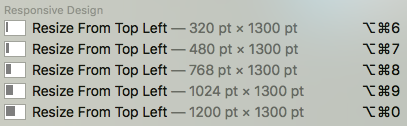

Responsive Design With Moom
Wed, May 2, 2018Responsive design is not meant to be about the device. It’s about the breakpoints that your design needs, and supporting them correctly. That’s why when dragging the browser to resize your site, the design should look good at all widths. And even though that’s true, I still have a desire to verify how the design would look on a specific device like a portrait iPad.
To satisfy that desire, I called on Moom once again. It’s quick and simple to create predefined widths, so why not?

Then, it’s just a keystroke to check a different device, or toggle through all predefined settings.
There are some size references here, but really this is just a nice convenience for any sort of size testing.